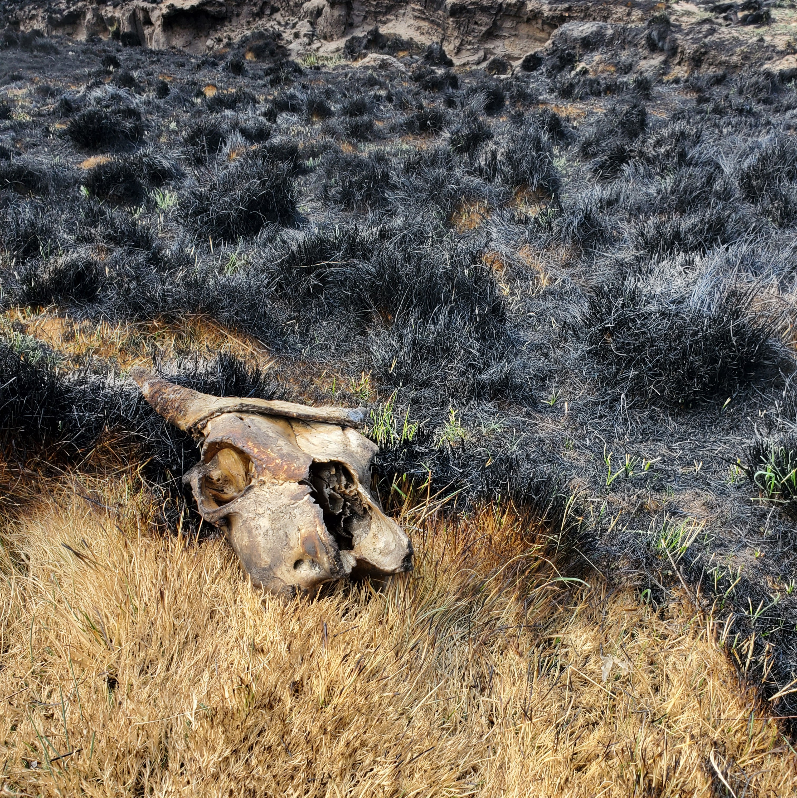
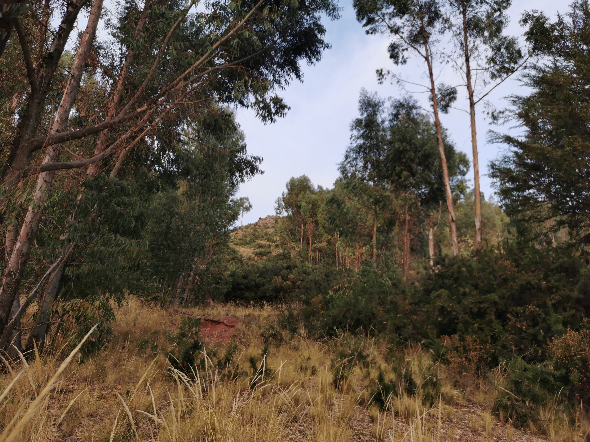

Projectos de investigación
Estudio como el cambio climático afecta el funcionamiento de los ecosistemas.
Desde niño me ha fascinado la vida y más adelante en mi etapa universitaria me incliné por el estudio de las interacciones biológicas, ecología de perturbaciones, funcionamiento ecosistémico y ecología de suelos utilizando comunidades vegetales como modelo de estudio en mis experimentos.
Proyectos de Investigación

Impacto de Incendios en Pastizales Altoandinos
Participé como tesista e investigador junior del proyecto "Efectos de los incendios y factores ambientales y antrópicos que determinan su ocurrencia y extensión en pastizales altoandinos de importancia ganadera en la región de Puno".
Este proyecto fue financiado por el Consejo Nacional de Ciencia, Tecnología e Innovación (CONCYTEC) a través de su brazo ejecutor PROCIENCIA, y ejecutado por el Gutierrez-Flores Lab de la Universidad Nacional del Altiplano Puno.
Proyectos de Investigación

Alelopatia en plantas silvestres altoandinas
Investigué los "Efectos de los lixiviados de las hojarascas de eucaliptos y pinos en la diversidad, germinacion y desarrollo de plantas silvestres altoandinas del departamento de Puno".
{kind=link}
{kind=link}